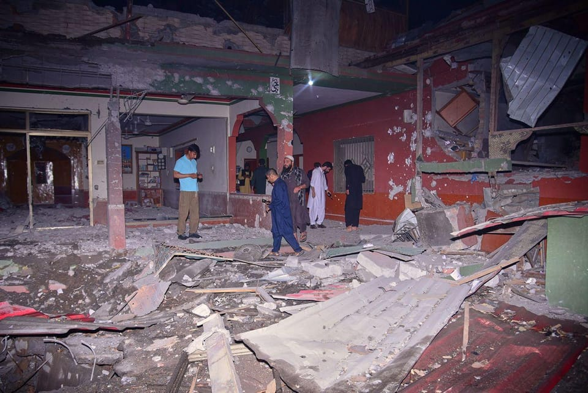

世界苦茶05月07日新闻 | 49条 | 印巴开打

印巴开打 | 乌克兰袭击莫斯科 | 何立峰将与贝森特在瑞士会谈 | 中国降准 | 印度与英国达成自贸协定 | 欧盟将在2027年停止俄罗斯能源 | 美国与胡塞武装达成停火
三个水枪手
苦茶数据
美元兑人民币：7.22（昨日7.22，前日7.20）
美元兑日元：143.09（昨日143.79，前日143.97）
上证指数：3336（昨日3302，前日3279）
标普500指数：5606（昨日5650，前日5686）
比特币：96818（昨日94287，前日94198）
布伦特原油：62.51（昨日61.04，前日59.08）
中国新闻
• 飞机落地复飞备降西安 ：中国一趟内陆航班抵达目的地，触地后又复飞，之后转降西安。乘客称，当时银川机场天气很差。据中国极目新闻报道，这趟吉祥航空HO2301星期一从上海起飞，目的地为银川，但飞机在已经轮子接地的情况下再次复飞，之后备降西安咸阳国际机场，并于同日晚间安全抵达银川。客机追踪网站FlightRadar 24信息显示，客机早上9时05分起飞，原定早上11时55分抵达目的地银川。极目新闻引述航班管家信息报道，飞机落地西安后，在当天傍晚5时35分起飞，并于傍晚6时31分落地银川。
• 中国留学生纵火获刑 ：韩国地方法院对今年2月涉嫌在校园纵火的中国籍留学生判处有期徒刑一年六个月。综合韩联社和韩国每日经济新闻报道，韩国蔚山地方法院刑事审判第一独任庭星期二作出上述判决。据悉，这名留学生是在蔚山某大学的交换学生，今年2月19日利用被子、笔记本、垃圾等物品，先后在校内吸烟区、道路、附近山地等四处地点纵火。
• 非洲军官代表团访华 ：由埃及、莫桑比克、坦桑尼亚、肯尼亚等40多个非洲国家近百名军官组成的非洲中青年军官代表团，从星期二起访华10天。据“国防部发布”微信公众号消息，应中国国防部邀请，5月6日至15日，由埃及、莫桑比克、坦桑尼亚、肯尼亚等40多个非洲国家近百名军官组成的非洲中青年军官代表团赴华访问，期间赴北京、长沙、韶山等地参访交流。“国防部发布”称，此次活动是中国国防部第四次组织，由国防科技大学具体承办，旨在落实中非合作论坛北京峰会成果，深化中国与非洲国家军队传统友谊，增进中非中青年军官相互了解，助力构筑新时代全天候中非命运共同体。
• 五一出游消费达1802亿 ：中国官方数据显示，中国游客在“五一”假期期间的消费总额达1802.69亿元人民币，同比增长8%。人民日报客户端报道，据中国文化和旅游部数据中心测算，在为期五天的五一假期中，中国国内出游3.14亿人次，同比增长6.4%；国内游客出游总花费1802.69亿元，同比增长8.0%。路透社根据官方数据计算显示，人均支出增长了1.5%，达到574.1元。不过，仍低于2019年冠病疫情暴发前的水平，当时人均支出为603.4元。
• 广东遭冰雹大风袭击 ：中国广东多地星期一遭遇冰雹等强对流天气袭击，其中广州有厂房的棚顶被冰雹砸穿。据中新社报道，广州是受此轮强对流天气影响较严重的区域之一，广州市气象灾害应急指挥部于当天下午3时1分启动广州市气象灾害Ⅳ级应急响应。报道称，冰雹对广州花都区的影响明显。据花都区气象部门介绍，当地有厂房的棚顶被鸽子蛋大小的冰雹砸成了“星空”顶，部分厂棚被大风吹翻。
• 高中试双休后取消制度 ：中国多地高中自今年3月试行周末双休，但据报时隔仅一个月就有多所学校取消这个制度。据《中国新闻周刊》报道，今年4月，有河北、湖南、浙江等地的学生或教师在社交媒体上发文，揭露周末双休制度已在个别学校被悄然取消。河北省石家庄市一所市属公办学校的高二教师说，其所在学校从3月中开始，实行过一个月的每周双休，但现已恢复两周一休。
• 滕州车祸致6死司机酒驾 ：山东省滕州市善国路5月4日发生车辆撞人事故，造成6人死亡、2人受伤。当天下午，一辆小车突然变向，快速撞向路侧公交站台，致多人倒地，现场有数米高路灯也被肇事车辆撞倒。经警方调查，肇事司机蔡某某系醉酒驾车，自北向南超速行驶，从右侧强行超车时发生事故。目前，案件调查及善后处置等工作正在进行中。
• 中欧互致贺电庆建交50年 ：习近平、李强5月6日同欧洲理事会主席科斯塔、欧盟委员会主席冯德莱恩互致贺电，庆祝中国和欧盟建交50周年。同日，外交部发言人在记者会上证实，经中欧双方商定，中方和欧洲议会决定同步全面取消对相互交往的限制。中方欢迎欧盟领导人适时联袂来华举行新一次中欧领导人会晤，双方还将举行战略、经贸、绿色、数字等高层对话。
亚太印太新闻
• 印度5月7日凌晨向巴基斯坦本土及巴控克什米尔地区发动军事打击。印控克什米尔地区传出爆炸声： 巴基斯坦军方称，印度导弹袭击了巴基斯坦旁遮普省2个地点和巴控克什米尔地区3个地点，造成至少8人死亡、35人受伤，另有2人失踪。这些导弹从印度境内发射，没有印度飞机进入巴领空。巴军还表示在印度领土内击落3架印度军机和1架无人机，并发射导弹摧毁了印方境内一处军事指挥部以反击印度对巴空袭。印度国防部称，共有9个地点成为打击目标，这些地点是计划针对印度发动恐怖袭击的基础设施。印度表示其行动是集中谨慎且非升级局势的，巴基斯坦的军事设施没有成为目标。印军发帖称，“正义得到伸张”，但未提供细节。巴基斯坦总理和国防部长均誓言将展开报复。印控克什米尔地区的斯利那加传出爆炸声。尚不清楚爆炸原因。
• 查谟-克什米尔实际控制线发生激烈炮火交火： 周三凌晨，印度陆军在查谟-克什米尔实际控制线发起“朱砂行动”，对位于巴基斯坦和巴控克什米尔地区的九个恐怖分子营地实施精准打击，随后双方爆发激烈炮火交火。此次行动是在帕哈尔甘地区发生导致26人死亡的恐袭事件数日后进行的。
• 缅甸延长地震后停火期 ：缅甸国防军总司令部发布公告，宣布再次延长临时停火，以迅速开展地震灾区重建工作。新华社报道，缅甸军政府星期二宣布，将从星期二延长停火至31日。此前，缅甸国防军宣布从4月2日至4月22日实施临时停火，之后又延长至4月30日。
• 国民党提普发一万新台币 ：台湾最大在野党国民党提议向全民普发现金1万元新台币，以应对美国的高额关税。综合台湾《联合报》《自由时报》报道，为了应对美国对等关税措施，台湾行政院在4月28日提出4100亿元特别条例预算，其中包括增加国土安全韧性预算1500亿元、拨补台电亏损1000亿元等。不过，国民党立法院党团质疑行政院未做好产业和劳工冲击评估，反而趁机“灌水”。为此，国民党团星期二提出该党团版本的特别条例。 （翻评：直接花国家的钱买自己的罢免案选票。）
• 台军将试射海马斯火箭 ：台湾军方向美国采购的海马斯多管火箭，将于下周首次实弹射击。据联合新闻网报道，台湾陆军发布射击通报，下周一将在屏东满州、九鹏地区进行地面武器射击，射击时间为上午8时至12时以及下午1时30分至5时。5月19日则为预备日。IDF脸书专页也报道，台湾陆军海马斯多管火箭系统已进驻九鹏基地，准备下周执行相关操演。这是HIMARS首度在台射击。
• 赖清德会见日本访团 ：台湾总统赖清德星期一接见日本前经济产业部长西村康稔访团时，感谢日本政府持续在国际场合为台湾发声，并称面对中国大陆对周边国家实施灰色地带侵扰，同样位居第一岛链的台日若能强化合作，必能发挥吓阻力量。据台湾总统府官网新闻稿，赖清德在会面时说，近年来，中国大陆持续在台海、东海、南中国海以及日本海进行军演，对周边国家实施灰色地带侵扰，严重破坏区域和平与稳定。同样位居第一岛链的台湾与日本应加强合作，共同应对。特别是台湾和日本是共享自由、民主、人权等普世价值的民主伙伴，如果能强化双方在海洋安全、社会韧性以及面对灰色地带侵扰等面向共同合作，相信必能发挥吓阻力量，确保印太地区和平与稳定，守护民主体制。赖清德也说，当前面对全球经贸变局，经济安全日益重要。台湾期待跟日本进一步深化在半导体、氢能、人工智慧及无人机等领域的产业合作，共同强化“非红供应链”韧性。台湾除了积极争取参加《跨太平洋伙伴全面进展协定》，也希望跟日本早日洽签经济伙伴协定。
• 泰十万网安人员完成培训 ：由泰国国家网络安全局举办的网络安全培训班举行了结业仪式，10万名来自各行各业的网络安全人员完成培训任务，大大提升其网络安全工作能力。泰国副首相兼国防部长普坦主持了星期一的结业仪式。泰国国家网络安全局秘书长阿莫伦介绍说，该培训项目为来自关键基础设施组织、监管机构、政府机构、私营部门的网络安全人员提供了专业培训，培训内容涵盖网络威胁预警、黑客攻击防范、运营技术安全、数码取证以及高级网络风险管理等领域的专业课程，旨在系统地提升泰国各个层面的网络安全技能。
科技新闻
• Google发布Gemini 2.5 Pro ：Google周二宣布推出 Gemini 2.5 Pro Preview(I/O 版)，这是其旗舰产品 Gemini 2.5 Pro AI 模型的更新版本，该模型在许多广泛使用的基准测试中名列前茅。新模型可通过 Gemini API 以及Google的 Vertex AI 和 AI Studio 获取，价格保持不变。它也包含在 Gemini 聊天机器人应用中。据Google称，Gemini 2.5 Pro Preview(I/O 版)“显著”提升了编码和构建交互式 Web 应用的能力。该模型在代码转换和代码编辑等任务上也表现得更出色，WebDev Arena 上以1420分大幅领先其他模型。
• RTX5090 D或被全面禁售 ：在今年一月份的CES 2025上，英伟达发布新一代基于Blackwell架构的GeForce RTX 50系列游戏显卡。其中旗舰级的RTX 5090和RTX 5090 D以及次旗舰级的RTX 5080，已于1月30日上市。RTX5090 D属于针对中国市场的合规版产品，AI 性能从 3352 AI TOPS 降至2375 AI TOPS。据悉，英伟达RTX5090 D系列型号基本敲定第二季度没有GPU可供，也就是RTX5090 D无法卖到中国区市场，各显卡品牌厂商也将无法提到GPU订单。英伟达第二季度内基本确定RTX5090 D系列GPU无法接单，已下单的RTX5090 D芯片订单，未交货的采购订单暂时全部取消，相当于RTX5090D暂时被正式全部被禁售了。
• 苹果AI将落地中国市场 ：据知名科技记者马克·古尔曼透露，苹果公司人工智能有望在 iOS 18.6 系统中首次在中国大陆启用部分功能，背后由阿里和百度提供技术支持。具体来看，百度的文心一言大模型将作为国行版苹果人工智能的核心云端智能引擎。与此同时，为确保人工智能内容符合国内法规，苹果还将引入由阿里提供的审查机制，对人工智能生成内容进行本地合规审核。今年二月，阿里联合创始人蔡崇信曾确认了双方的合作关系。在2024财年第三财季财报电话会上，苹果首席执行官蒂姆·库克曾表示，公司正积极与中国和欧洲的监管机构沟通，力求推动苹果AI在更多市场落地。
• 马斯克仍将起诉OpenAI ：美国亿万富翁埃隆·马斯克的律师马克·托伯夫周一表示，尽管OpenAI公司放弃了重组为营利性公司的计划，但是马斯克计划继续推进对OpenAI的诉讼。根据OpenAI周一最新提出的计划，其非营利母公司将继续控制其营利性业务并成为主要股东。作为OpenAI的联合创始人，马斯克已提起诉讼试图阻止OpenAI摆脱非营利母公司控制权的转型。该诉讼的陪审团审判原定于2026年3月进行。
• 百名CEO呼吁AI入中小学 ：超过 250 名CEO周一签署了一封在纽约时报上发表的公开信，呼吁将人工智能和计算机科学作为 K-12 课程的“核心组成部分”。签署者包括微软CEO萨蒂亚·纳德拉、Etsy CEO乔什·西尔弗曼和优步CEO达拉·科斯罗萨西，他们认为计算机科学和人工智能教育对于保持美国竞争力至关重要。信中写道：“巴西、中国、韩国和新加坡等国家已经将计算机科学或人工智能列为每位学生的必修课。美国正在落后。在人工智能时代，我们必须为孩子们的未来做好准备 —— 让他们成为人工智能的创造者，而不仅仅是消费者。”上周，特朗普发布了一项行政命令，通过产学研合作促进AI在 K-12、高等教育和工作场所的整合。
财经新闻
• 中国人民银行决定降准0.5百分点，加权平均从6.6%降到6.2%，5月15日实行： 汽车金融公司、金融租赁公司存款准备金率从5%调降为0%。央行政策利率 5月8日起由1.50%调整为1.40%。结构性货币政策工具利率下调0.25个百分点。公积金房贷利率降0.25百分点。创设科技创新债券风险分担工具，央行为购买科创债提供再贷款，并分担违约损失风险。设立5000亿元“服务消费与养老再贷款”。科技创新和技术改造再贷款额度由五千亿增至八千亿。支持全国性商业银行设立金融资产投资公司，5月7日将批复一家。
• 中国国务院副总理何立峰与美国财政部长贝森特将在瑞士举行会谈： 中国外交部称，何立峰于5月9日至12日访问瑞士，与瑞士领导人及有关方面举行会谈。期间何立峰与贝森特举行会谈。5月12日至16日，何立峰将赴法国与法方共同主持第十次中法高级别经济财金对话。中国商务部称，近期，美方高层不断就调整关税措施放风，并通过多种渠道主动向中方传递信息，希望就关税等问题与中方谈起来。中方对美方信息进行了认真评估。在充分考虑全球期待、中方利益、美国业界和消费者呼吁的基础上，中方决定同意与美方进行接触。
• 欧洲人抵制美国产品 ：欧洲央行一项最新调查发现，美国总统特朗普对欧洲发动关税战，已导致许多欧洲消费者开始避开美国产品与服务，他们“罢买美国”的立场明确，甚至可能成为长期趋势。《纽约时报》报道，欧洲央行4月底发表博文说，它的研究发现即使只对在欧洲贩售的美国产品征收5%税率，欧洲人都会偏向拒买。一些欧洲消费者甚至倾向完全避开美国产品和品牌，不论价格高低。“即使这些消费者可负担较昂贵的美国产品和服务，他们也会有意识地选择其他替代品，这显示消费者或许不是对关税上调做出短暂反应，而可能是长期消费取向的结构性转变，避开美国产品和品牌。”在德国和意大利，有开发者创建新的应用，可扫描人们购买的食品和服装，确保他们买的不是美国产品。当中最受欢迎的应用BrandSnap甚至会推荐替代的欧洲品牌。
• 蓝佛安称中国增长可期 ：中国财政部部长蓝佛安强调，中国将采取更加积极有为的宏观政策，有信心实现2025年的5%左右增长目标。中国财政部官网星期二公布，亚洲开发银行理事会年会5月4日至7日在意大利米兰举行。蓝佛安与会并发言，并进行了系列双边会谈。蓝佛安指当前国际局势动荡加剧、乱象频出，单边主义、保护主义抬头，特别是近期个别国家掀起关税战、贸易战，给全球经济带来史无前例的巨大风险。他呼吁各成员同舟共济，秉持开放包容、团结合作精神，尊重多边机构规则，为全球经济发展注入更多确定性和正能量。
• 美3月贸易逆差创新高 ：由于企业在关税措施生效前增加商品进口，美国3月份贸易逆差写下历史新高。路透社报道，根据美国商务部经济分析局星期二发布的文告，美国3月份的贸易逆差跃升至创纪录的1405亿美元，较2月份的1232亿美元增加了14%。尽管美国3月份的出口额增长0.2%，达到创纪录的2785亿美元，但进口额飙升4.4%，达到历史最高水平的4190亿美元，远超出口额。
• 中方将公布金融稳市政策 ：中国官方宣布，将在星期三早上9时举行新闻发布会，介绍一揽子金融政策支持稳市场稳预期有关情况。根据中国国务院新闻办公室在官网发布的采访通知，中国人民银行、国家金融监督管理总局、中国证券监督管理委员会负责人会在发布会上，介绍一揽子金融政策支持稳市场稳预期有关情况，并答记者问。
• 台拟开放日本全龄牛肉 ：台湾拟全面开放日本全龄牛肉进口，实施时间尚未确定。综合台湾《联合报》和ETtoday新闻云报道，台湾卫生福利部食药署在3月4日预告修法，拟取消“仅限30月龄以下”日本牛肉的进口限制，放宽日本全龄牛肉输入。该草案的预告期已于星期一结束。食药署署长姜至刚说，开放措施已进行风险评估，并符合国际规范。就算以最保守的估算，若消费者每天食用风险最高的带骨牛肉，终生感染新型库贾氏症的中位风险为6.49乘以10的负9次方，相当于1.5亿人中才有一人可能受影响。
• 朱立伦警告美债危机 ：台湾在野的国民党主席朱立伦预言6月将出现美债危机，持有5000亿美元美债资产的台湾恐怕会受伤最深。综合台湾《联合报》和今日新闻报道，朱立伦星期二早上陪同国民党立委罗智强宣讲反罢免行动时说，民众当前担忧新台币大幅升值，对出口商造成冲击，但总统赖清德却将新台币升值的责任归咎于在野党“唱衰”。朱立伦猛批赖清德“不懂财经、不负责任，就职近一年一事无成，唯一成就就是家暴在野党”。
• 安华呼吁支持国货抗关税 ：马来西亚首相安华呼吁马国人民多加支持当地产品，以应对美国总统特朗普影响全球经济的新关税政策。他说，通过购买更多马国制造的产品，马国将可以减轻可能面临的潜在挑战。他说：“你要么变得无助，要么从中获益，我们应该善用本地的专才和资源。”安华于星期一出席在管理与科学大学举办的“安华与私人高等教育机构对话”活动中说，政府已经指示全国学校、大专院校和医院使用由马国制造的太阳能电板。
• 港货运受中美关税冲击 ：香港货运代理业正遭受中美关税战的冲击，据报从下星期一起的一周内，从香港到北美西海岸的集装箱班轮有高达41%被取消。《南华早报》星期二引述国际货运预订和支付平台Freightos高管乔伊斯戴说，许多业务与中美贸易往来超过15%的制造商，已被迫裁员或削减成本。她进一步说：“经济将受到巨大打击，香港方面可能受到的打击更大，因为香港是一个中转站。”
• 中国服务业景气创新低 ：最新调查数据显示，受美国关税带来的不确定性影响，中国4月服务业扩张速度放缓，景气度降至2024年10月来新低。财新网星期二公布的4月财新中国通用服务业经营活动指数录得50.7，低于3月1.2个百分点，在扩张区间降至七个月来最低。彭博社调查的经济学家的预测中位数为51.8。这一结果与官方调查结果大致一致，中国国家统计局此前公布的数据显示，4月服务业PMI下降0.2个百分点至50.1。财新PMI被认为更能反映出口导向型企业和小型企业的趋势。
• 淘宝闪购六天破千万单 ：中国电商巨头阿里巴巴旗下购物平台淘宝推出的快速配送功能，上线不到一周就取得了初步胜利，在该公司规模最大的促销活动中，每日订单量已达到1000万份。综合《南华早报》、新浪科技、快科技等报道，阿里巴巴旗下外卖平台饿了么官方宣布，截至星期一晚上8时28分，来自淘宝闪购的当日订单已突破1000万单，此时距离淘宝闪购业务正式上线仅六天。阿里巴巴上星期三将旗下即时零售业务淘宝“小时达”升级为淘宝闪购。全中国用户即日起可通过淘宝内的“闪购”入口点外卖。
• 美关税重压低收入家庭 ：美国智库税收与经济政策研究所的分析报告显示，美国总统特朗普的关税措施对低收入家庭带来的冲击是高收入群体的三倍以上。这份报告概述了如果现行关税在明年继续实施，不同收入水平的美国人所受到的影响。根据分析，由于物价上涨，年收入在2万8600美元或以下的人所面对的额外花费将占收入的6.2%，而年收入至少为91万4900美元的最富有美国人预计将多花费收入的1.7%。年收入在5万5100美元至9万4100美元之间的中等收入家庭则须多花5%。
• 多州起诉特朗普称其对风能构成“生存威胁”： 哥伦比亚特区和纽约州、亚利桑那州、马萨诸塞州、加利福尼亚州、科罗拉多州和伊利诺伊州等17个州于周一起诉特朗普政府，原因是其试图阻止美国各地的风能开发。各州认为，特朗普总统上任第一天签署了一份总统备忘录，暂停了联邦政府对风能项目的批准，这阻碍了各州减少污染和为居民提供廉价电力的能力。这些州认为，他们在风能基础设施、劳动力发展和供应链方面投入的数十亿美元资金正面临风险。纽约州总检察长莱蒂蒂亚·詹姆斯在一份新闻稿中表示：“ 本届政府正在摧毁我国增长最快的清洁、可靠且经济实惠的能源之一。”该诉讼称，特朗普以“武断并且反复无常”的方式打压风能。
• 印度与英国达成自由贸易协定，莫迪总理称其为“历史性里程碑”： 印度总理纳伦德拉·莫迪周二在与英国首相基尔·斯塔默通话后表示，印度与英国已完成一项“雄心勃勃且互利共赢”的自由贸易协定，此协议将深化两国全面战略伙伴关系，促进贸易和投资。这项协议是在莫迪与时任英国首相鲍里斯·约翰逊于2022年10月前完成FTA的目标提出三年后达成的。期间，由于包括酒类和汽车关税在内的一系列问题以及英国国内的政治动荡，谈判一度受阻。莫迪在X平台发文称：“很高兴与我的朋友@Keir_Starmer首相通话。在一个历史性的里程碑上，印度与英国成功完成了一项雄心勃勃、互利共赢的自由贸易协定，同时签署了双重征税协议。”
俄乌战争
• 习普将谈俄乌与能源 ：克里姆林宫说，俄罗斯总统普京和中国国家主席习近平将举行会谈，讨论俄乌冲突和美俄关系。法新社报道，俄总统助理乌沙科夫星期二说，两国领导人将于星期四在莫斯科进行会谈。另据路透社报道，两国领导人也将讨论能源合作，以及拟议中通往中国的“西伯利亚力量二号”天然气管道。
• 俄伊通话欲促核协议 ：克里姆林宫说，俄罗斯总统普京与伊朗总统佩泽希齐扬通话，表明希望美伊之间达成一项“公平”的核协议，并准备协助推进谈判。法新社报道，克里姆林宫星期二公布两国领导人的通话内容说，俄方确认愿意为推动此次对话做出贡献，以期达成一项基于国际法原则的公平协议。伊朗与美国定于上星期六举行最新一轮核谈判，但调解方阿曼以“后勤原因”为由推迟会谈。
• 波兰指俄干预总统选举 ：波兰副总理加夫科夫斯基说，随着总统大选进入最后阶段，波兰正面临俄罗斯的干预。路透社报道，波兰总统选举的首轮投票将于5月18日举行。加夫科夫斯基星期二在国防会议上说：“在波兰当前的总统选举中，我们正面临俄罗斯前所未有的干预企图。”他说，俄罗斯正在散布虚假信息，并对波兰关键基础设施发动混合攻击，试图瘫痪波兰的正常运作。
• 中俄合拍电影将上映 ：中国和俄罗斯合拍的电影《红丝绸》，将于9月在中国上映。该片讲述中国和苏联两国革命者并肩作战，成功安全护送重要秘密文件的故事。据中国国家电影局官网星期一消息，在俄罗斯纪念苏联伟大卫国战争胜利80周年前夕，中国中央广播电视总台会同中国国家电影局将在莫斯科举办《红丝绸》的宣传推介活动。
• 赫格塞思误停乌援风波 ：美国国防部长皮特·赫格塞思在特朗普上任后不久，自行口头下令暂停对乌克兰军援。消息人士称，特朗普1月30日与赫格塞思等国家安全官员举行会议。会议提出了停止援助乌克兰的想法，但特朗普并未发出相应指示。随后，美国军方要求货运航空公司停飞装有军援的航班。乌克兰和波兰官员2月2日询问暂停一事，以及是谁下的命令。但白宫、国防部和国务院均无法给出答案。美国运输司令部的记录显示，赫格塞思下达了停止航班的口头命令。他们于2月5日之前恢复了航班。消息人士称，特朗普的幕僚们从国防部工作人员处得知了暂停援助的消息，并与特朗普讨论了是否恢复援助。总统国家安全事务助理迈克尔·华尔兹最终进行了干预，撤销了暂停的命令。尽管白宫应询表示，赫格塞思遵循了特朗普的指示，并表示这是政府的立场。但消息人士称，特朗普和与会的其他高级安全官员均对此不知情。消息人士称，赫格塞思误解了特朗普关于乌克兰政策和援助物资运输的讨论。此外，国防部内部少数工作人员建议赫格塞思考虑暂停对乌克兰的援助。这些人中许多从未在政府就职，多年来一直公开反对援乌。 （翻评：真正的草台班子，所以为何是Waltz被解职，而不是Hegseth。）
• 欧盟拟设定2027年为切断俄能源合同的期限： 据欧盟官员透露，欧盟委员会将设定2027年为最后期限，要求欧盟公司终止与俄罗斯的所有剩余能源合同，并转向包括美国在内的其他能源来源。该计划将于周二公布，欧盟高级官员在发布前一直严密保密，担心其可能对能源市场产生影响。四名知情官员透露，欧盟委员会文件要求各公司在今年年底前终止与俄罗斯供应商的所有现货天然气合同，到2027年终止所有长期合同。这些措施一旦宣布后仍需获得大多数欧盟成员国以及欧洲议会的批准，其目的是绕开欧盟在实施天然气制裁时需要所有成员国一致同意的规定。欧盟方面还将推动赋予当局更大的商业合同监管权，以便追踪俄罗斯燃料的买家。
• 乌克兰在胜利日前夕再次发动对莫斯科的无人机袭击： 在周一晚上，乌克兰从多个方向向莫斯科发起了第二晚的无人机袭击，俄罗斯防空部队击落了至少19架乌克兰无人机。尽管未报告重大损毁或人员伤亡，但莫斯科的四个主要机场以及一些地区机场被迫关闭了数小时。俄罗斯航空监管机构随后确认，所有机场现已重新开放。俄罗斯国防部表示，整晚共摧毁了105架乌克兰无人机。这轮袭击发生在俄罗斯庆祝卫国战争胜利纪念日的前夕，本周俄罗斯将纪念击败纳粹德国80周年。
其他新闻
• 美国与胡塞武装已达成停火协议： 阿曼外交大臣巴德尔5月6日说，根据阿曼与美方及也门萨那有关当局近日为缓和局势所进行的磋商与接触，美国与胡塞武装已达成停火协议。未来双方将不再互相攻击，包括不得针对红海及曼德海峡的美国船只，以确保航行自由和国际商贸航运的顺畅。美国总统特朗普6日也表示，也门胡塞武装同意停止威胁中东水域航行安全，在此基础上美国将停止对胡塞武装的轰炸。
• 以军空袭致也门机场瘫痪 ：以色列5月6日对也门萨那国际机场、发电站和一家水泥厂发动空袭。以色列军方称，袭击致使萨那国际机场完全瘫痪，萨那多个主要变电站被击中。胡塞武装控制的媒体证实机场遭到袭击。目前尚无伤亡消息。
• 哈马斯拒绝再谈停火 ：巴勒斯坦伊斯兰抵抗运动一名高级官员说，哈马斯不再有兴趣与以色列进行谈判，并敦促国际社会制止以色列对加沙地带发动的“饥饿战争”。法新社引述哈马斯官员巴塞姆·纳伊姆星期二的话说：“只要加沙地带的饥饿战争和灭绝战争继续下去，进行谈判或考虑新的停火提议就没有意义。”他敦促国际社会“向以色列总理内坦亚胡政府施压，要它结束在加沙的饥饿、干渴和杀戮罪行”。就在他发表上述言论的前一天，以色列军方宣布，扩大在加沙的军事行动，包括驱逐“大多数”加沙居民。
• 梵蒂冈将选举新教宗 ：梵蒂冈枢机主教团定5月7日开始选举下一任教宗。梵蒂冈说，参加秘密会议选举教宗的133名枢机主教目前全在意大利首都罗马。《南洋商报》引述梵蒂冈星期一发布的消息说，这133名枢机主教将于当地时间7日下午，聚集在梵蒂冈西斯汀圣堂秘密开会，持续投票直到选出新任天主教教宗，接任4月21日辞世的方济各。枢机主教选举团届时会透过将选票放入一座特别火炉焚烧所产生的烟雾，来向翘首企足的世人公布选举结果。
• 特朗普禁哈佛申请科研拨款 ：美国特朗普政府宣布，哈佛大学不再有资格获得新的联邦政府科研资助，显示白宫与这所常春藤盟校之间矛盾升级。美国教育部长琳达·麦克马洪星期一在致哈佛大学校长并在网上发布的信函说，哈佛大学“不应再向联邦政府寻求拨款，因为联邦政府不会提供任何拨款”。法新社引述她说，哈佛大学“未能遵守其法律义务、道德和信托责任、透明度责任以及任何形式的学术严谨性”。
• 默茨次轮当选德国总理 ：德国联邦议院5月6日经历两轮投票后选举弗里德里希·默茨为总理。在首轮投票中，默茨赢得了310名议员的支持，未能达到当选所需的316票。这是德国联邦议院首次出现指定的总理候选人未能当选。人们纷纷猜测哪些议员反对默茨。随后默茨的盟友很快团结起来，经过议员之间数小时的磋商，最终决定举行第二轮投票。在第二轮投票中，默茨赢得了325票，成功当选。此前，基民盟和基社盟组成的联盟党与社民党经历数周谈判达成联合执政协议。但该联盟在议会仅拥有328个席位，占微弱多数。6日首轮投票选举失败暴露了默茨的弱点。
• 美机场通信中断致航班乱 ：据知情人士透露，上周初，引导飞机飞往美国纽瓦克自由国际机场的空中交通管制员一度失去了雷达和无线电通信一分半钟，此后这个关键航空枢纽的航班连续数日陷入混乱。彭博社引述因为信息不公开而要求匿名的知情人士，这起关键系统中断事件发生在4月28日，持续近90秒。事故发生后，多名员工被安排休创伤假。此次事件及由此导致的人员减少，造成纽瓦克机场出现长达一周的航班延误和取消，迫使美联航将其在这个关键枢纽的每日往返航班削减35个。纽瓦克是美国联合航空公司最大的国际出发机场，也是美国国内航线的门户之一。